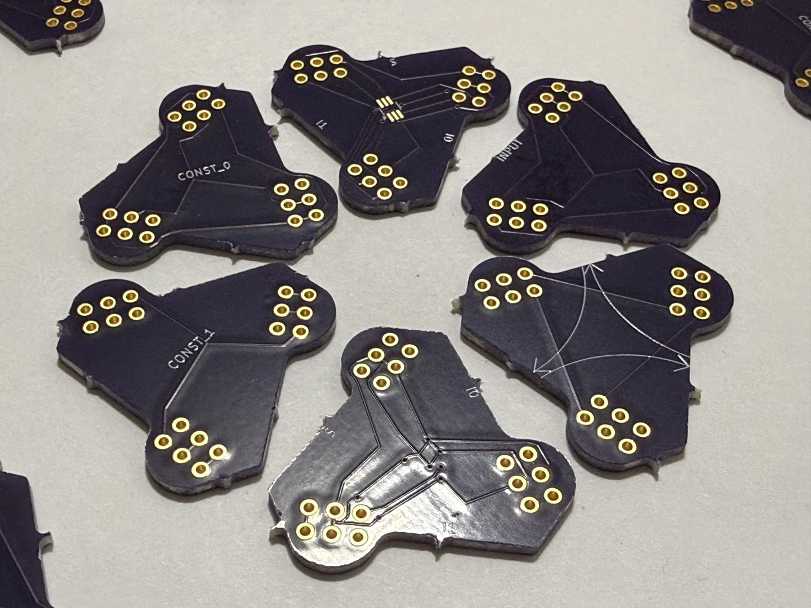
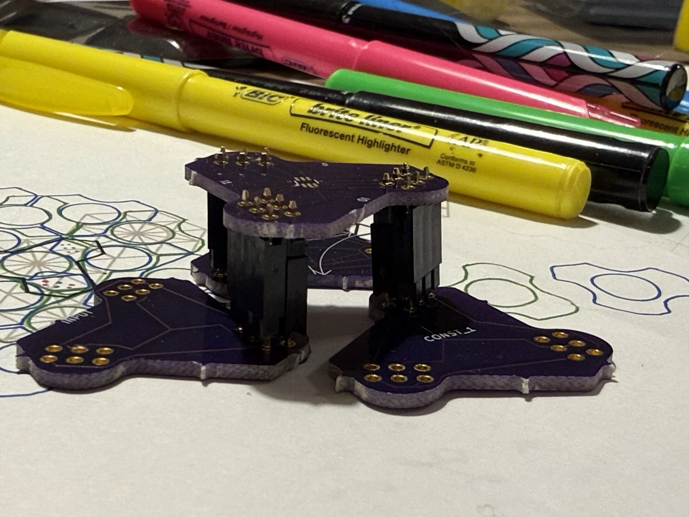
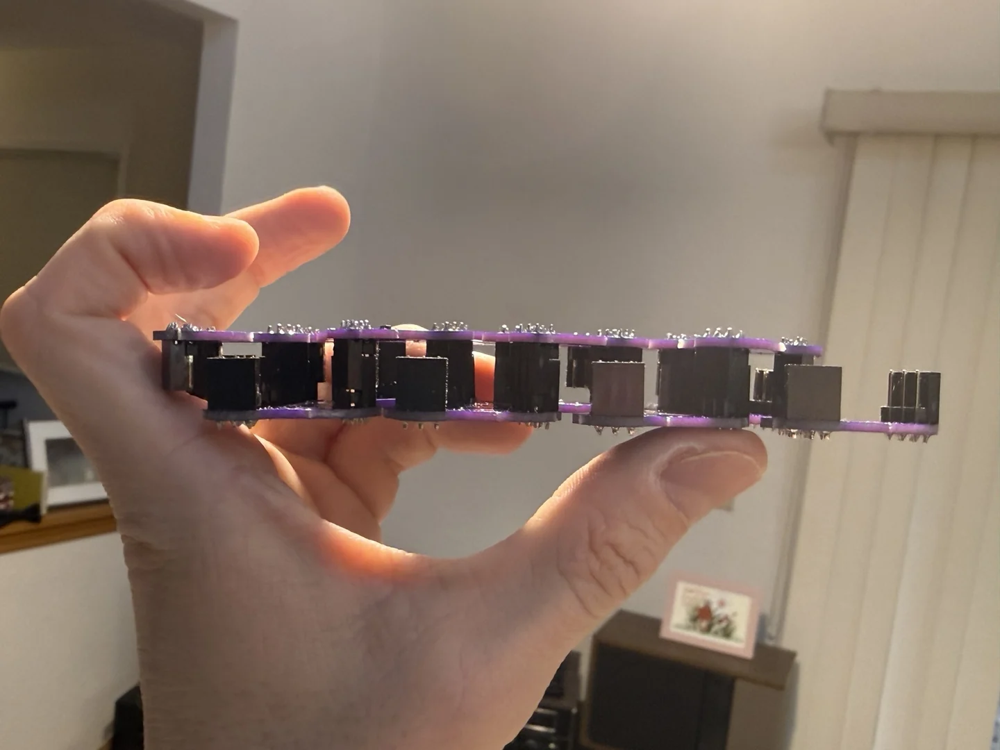

The Achievement Is A Physical Language
For roughly twenty-five years, the idea moved through mental models, paper, and CAD before the first connectorized batch could be snapped into a patch and picked up as one object.
The important crossing was not merely from an unmade board to a made board. It was from symbols that only existed in a drawing to a set of parts whose roles, sides, rotations, and neighbor relationships remain legible after assembly.
The circuit diagram and the manipulable physical representation become the same thing.
The Alphabet

- Input: marks the intended entry role at a visible place in the patch.
- Constants: represent logic zero and logic one as explicit physical roles.
- MUX: shows
I0,I1, selectorS, and the intended output route in one piece. - Wire and routing: represent a path across the patch without hiding topology in a bundle.
- Intersection: represents crossings and connection management in readable space.
Connector Geometry Makes Orientation Real
A schematic symbol can be rotated without consequence unless the reader keeps track. Here the connector side, contact groups, physical rotation, and neighboring pieces are all part of the object. The assembled structure can be inspected from several angles while its topology remains visible.
{kind=link}

{kind=link}

A Proposed Hands-On EE Learning Path
The project is designed to let a learner move from one physical decision to a circuit they can later express in Logisim, a truth table, or FPGA RTL. This teaching sequence is proposed; classroom outcomes have not yet been measured.
Name The Ports
Find
I0,I1,S, input, constant, and route roles directly on the boards.Predict One Selection
Choose values for the two MUX inputs and selector, then state which physical route should reach the output.
Rotate And Compose
Change the orientation of a piece, identify its new neighbors, and explain what topology changed.
Trace A Value
Follow a constant or input through route and intersection pieces without collapsing the patch back into an invisible netlist.
Build A Combinational Patch
Use several pieces to represent a small Boolean function, write its truth table, and reproduce it in Logisim.
Move From MUX To LUT
See how one selector becomes LUT1, how more address bits grow the stored truth table, and how the idea reaches real FPGA LUT4, LUT5, and LUT6 structures.
The Bridge To FPGA Logic And Cartilage
From Logisim And Multiplexers To LUT1–LUT6 is the direct conceptual continuation. It begins with a visible 2:1 MUX, grows the selector into a stored truth table, and connects LUT4 to Lattice iCE40 and LUT5/LUT6 to AMD/Xilinx configurable logic.
The complete Cartilage learning path continues into CMOS gain, output drive, clock and event distribution, statecharts, one-hot machines, timing closure, metal routing, nested components, and runtime instantiation in adjacent space. Those are logical and architectural layers beyond what these photographs establish.
What The Physical Evidence Establishes
EstablishedFabricated role variants share a repeated outline; plated contacts and socket/header parts are exposed; multiple pieces compose into palm-scale assemblies; static connector spacing permits more than one elevation.
Still to establish: powered electrical operation, full connection correctness, timing, signal integrity, insertion-cycle reliability, a powered sequential patch, classroom outcomes, safety certification, manufacturing scale, and production readiness.
The next decisive electrical result is deliberately small: power a patch and demonstrate a sequential circuit, with the D-flip-flop as the existing target. The current photographs are valuable because they prove the alphabet crossed into physical composition; they do not need to pretend that the next milestone already happened.
Source And Provenance
The physical alphabet was first published in the dated note The Physical MUX Tile Alphabet. The article here restores the original project arc, adds the fabricated-part photography, and gives the teaching project its own stable front door.
The photographs are published from the supplied project archive as cropped, metadata-free WebP derivatives. The original source files remain unchanged in the project package.